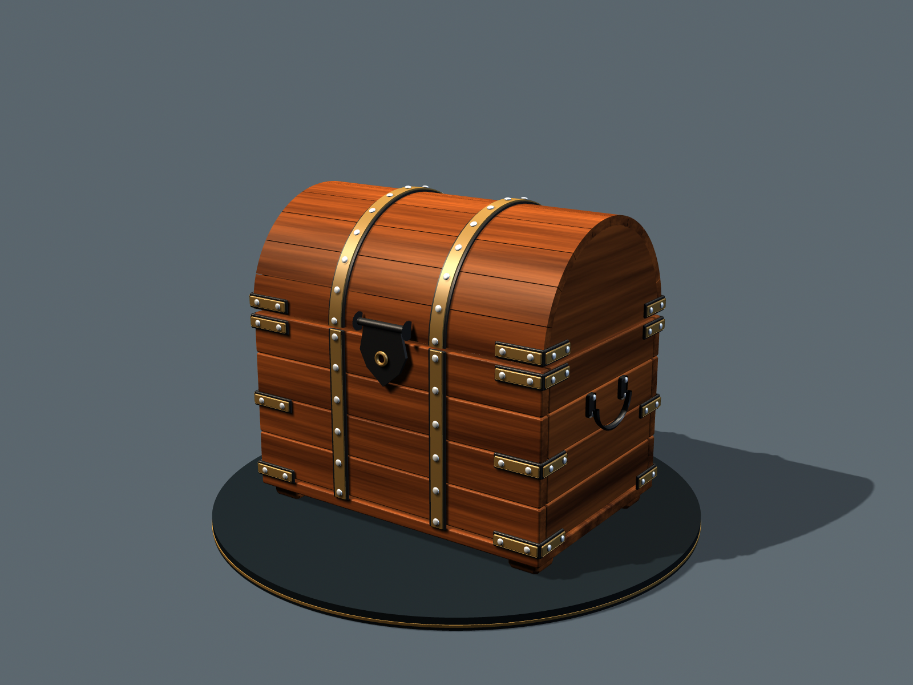
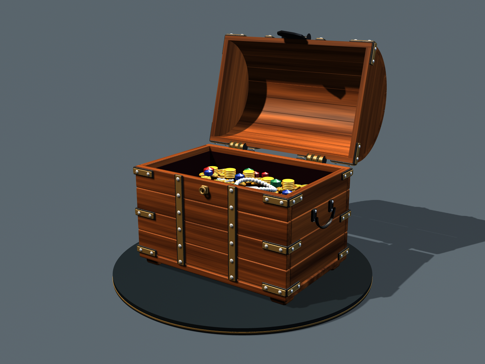
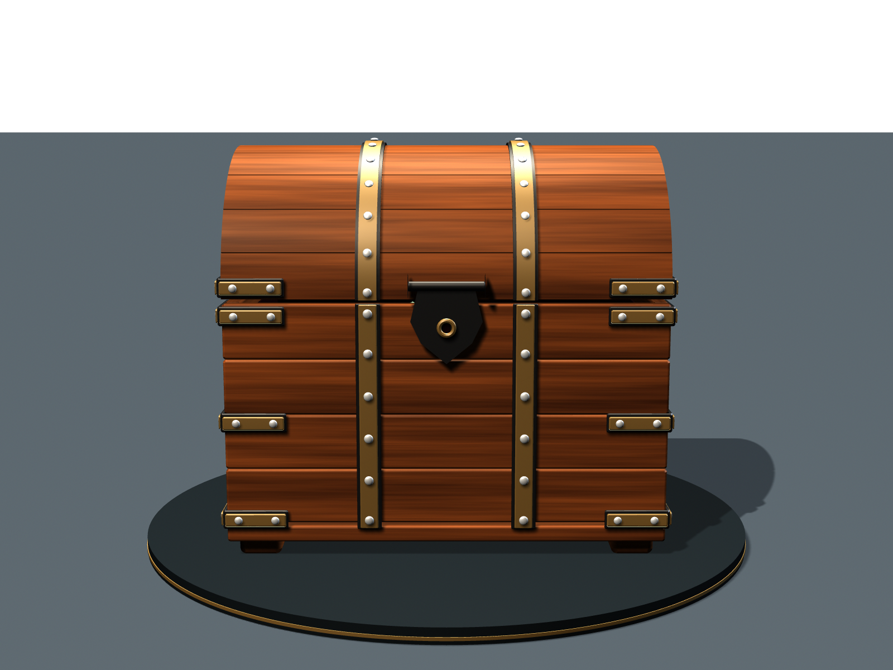
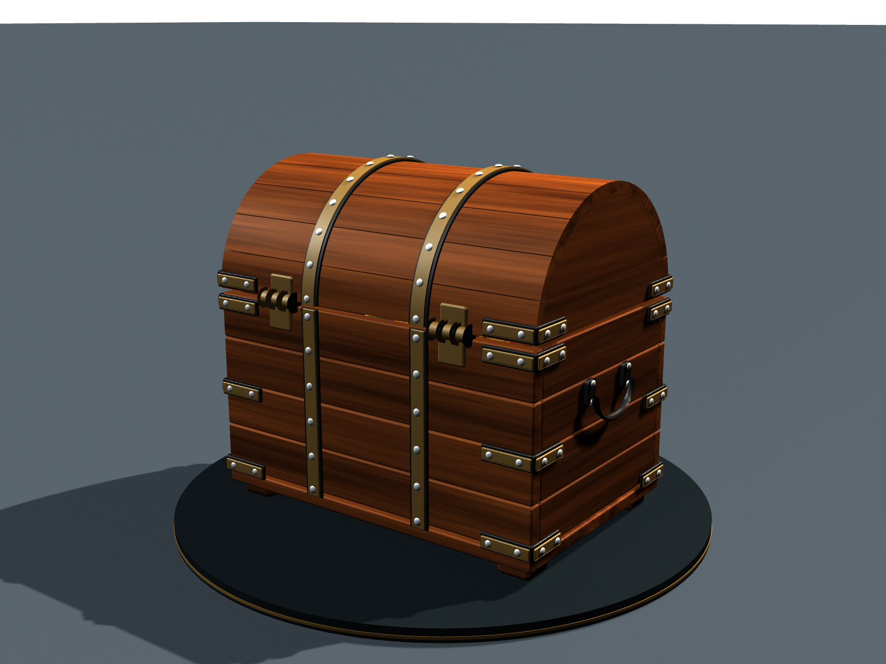
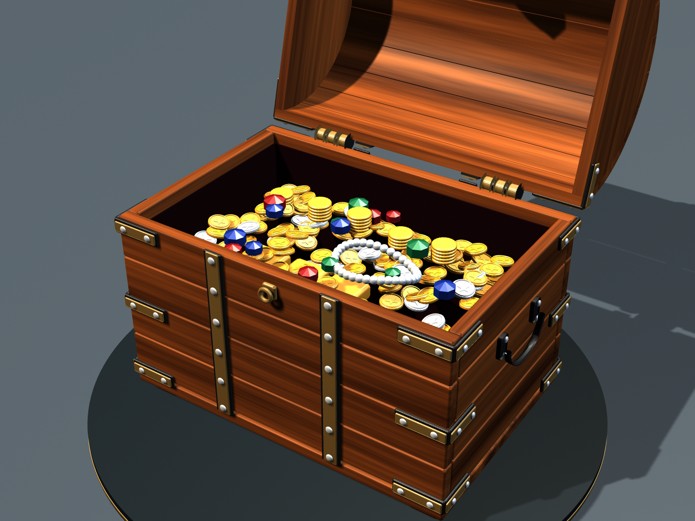
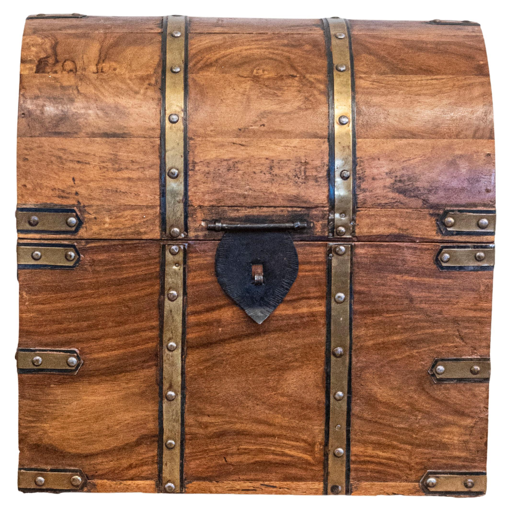
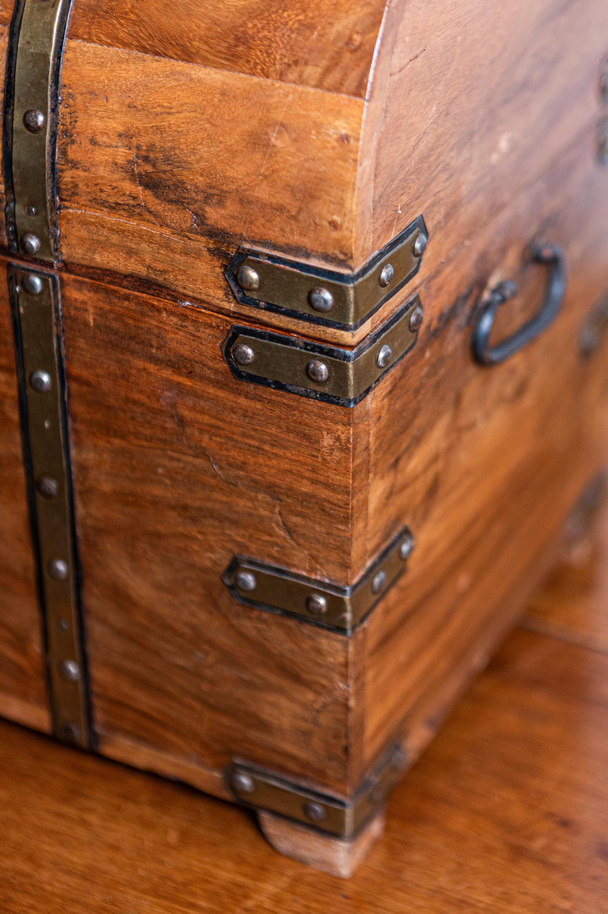

{kind=link}
{kind=link}
{kind=link}
{kind=link}
{kind=link}
01 / MODELING
Separate parts, fitted together
Beveled polygon boards form the body. The lid uses curved polygon strips with inner and outer surfaces, plus solid end panels. Braces, rivets, hinges, and handles are separate meshes.
Milo Nguyen · September 16, 2026 · Project 02
A wooden chest with a barrel-shaped lid, brass straps, and dark iron fittings. Polygon modeling, procedural wood shading, and a hinged opening animation in Autodesk Maya.


15 seconds · 24 fps · 1280 × 960
Front, rear, and interior views



Wood, brass, and iron


The model follows the domed silhouette, two narrow brass straps, dark hasp, rows of corner braces, and side handles of this physical vintage chest.
The reference is a bottle-storage chest. Its internal dividers are replaced here with a lined compartment containing treasure; the exterior hardware and board construction are simplified.
Photographs: English Vintage Wooden Treasure Chest Shaped Cellarette with Brass Details, 1stDibs. Accessed September 16, 2026.
01 / MODELING
Beveled polygon boards form the body. The lid uses curved polygon strips with inner and outer surfaces, plus solid end panels. Braces, rivets, hinges, and handles are separate meshes.
02 / SHADING
Stretched procedural grain and a light bump texture give the wood direction and surface variation. Brass, dark iron, gold, silver, and colored gemstones use separate materials.
03 / ANIMATION
The lid and its fittings share one hinge pivot. The display group turns through 360° twice while the lid opens between rotations and closes at the end. Treasure geometry is modeled within the scene; no downloaded models are used.